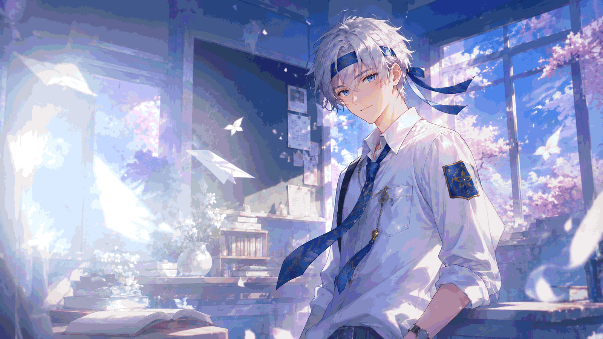

404
Ups! Halaman Tidak Ditemukan
ページが見つかりません · Page Not Found
Sepertinya halaman yang kamu tuju telah dipindahkan, diganti namanya, atau tautan yang kamu masukkan salah ketik. Yuk kembali ke jalur yang benar!

Sepertinya halaman yang kamu tuju telah dipindahkan, diganti namanya, atau tautan yang kamu masukkan salah ketik. Yuk kembali ke jalur yang benar!